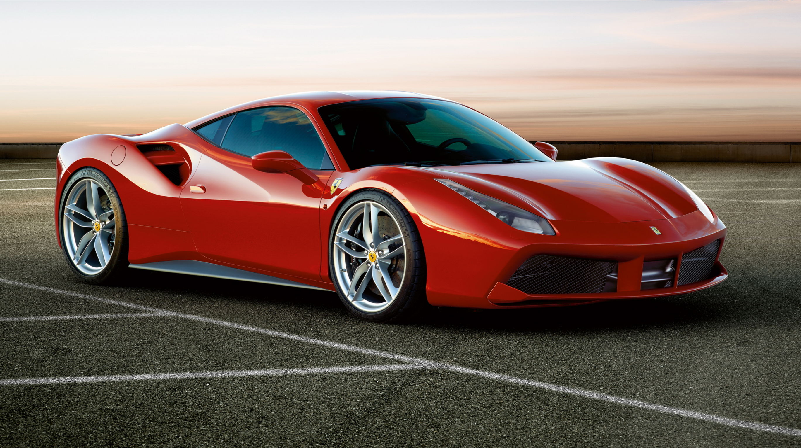

Designed by the Ferrari Styling Center, directed by Flavio Manzoni, the 488 GTB features very sculptural flanks, which are a key feature showcasing its character. The tail is dominated by the blown spoiler and the large air vents which help improve the car’s aerodynamics.
The 2020 Ferrari 488 Pista is the stuff of supercar dreams. Broad-shouldered with bulging fenders and a graceful arch of a roof, this confident Italian stands out in a crowd. Its cabin is surprisingly spacious, offering more real estate than you typically find in a two-door sports car. When it comes to performance, the 488 provides the power and poise you'd expect from a car crafted by the legendary Ferrari nameplate. It rockets from a standstill to 60 mph in less than three seconds, and it whips through corners and barrels down straightaways with singular agility. This Ferrari costs about as much as a home in the suburbs, but if you have the means, it has the goods to thrill and excite.
Ferrari offers the 488 Pista in coupe and convertible variants. Unless you have a distinct preference for the feel of wind whipping through your hair, we think you'll be more than satisfied with the coupe, which is slightly more affordable than the droptop. The Pista coupe comes with 20-inch wheels and the exterior is embellished with a jaunty racing stripe. A standard wing spoiler and sill extensions telegraph the car's performance capabilities. Automatic projector-beam LED headlights illuminate the path ahead, and they come with an auto-leveling feature.
Experience...
I awake with a start. A carload of men shout frantically at me, gesturing and pointing along the road. I’d only dozed off in the driving seat for a few minutes. We’d arrived on the edge of a tiny hill village, and John the photographer went ahead to look for locations, leaving me behind to avoid the possibility of wedging this wide new Ferrari into some tiny ancient alleyway. So he’s nowhere to be seen, and I am being – possibly – ambushed. This region is home to the ‘Fifth Mafia’, the Basilischi. I dunno, these guys are grinning and making camera gestures. My instinct says they’ve been commissioned by John to direct me to his photo op. I tag along behind their car, up a road that narrows and twists and eventually arrives at the gateway to an isolated cemetery. Great.

I awake with a start. A carload of men shout frantically at me, gesturing and pointing along the road. I’d only dozed off in the driving seat for a few minutes. We’d arrived on the edge of a tiny hill village, and John the photographer went ahead to look for locations, leaving me behind to avoid the possibility of wedging this wide new Ferrari into some tiny ancient alleyway. So he’s nowhere to be seen, and I am being – possibly – ambushed. This region is home to the ‘Fifth Mafia’, the Basilischi. I dunno, these guys are grinning and making camera gestures. My instinct says they’ve been commissioned by John to direct me to his photo op. I tag along behind their car, up a road that narrows and twists and eventually arrives at the gateway to an isolated cemetery. Great.
Source/Reference: https://ifworlddesignguide.com/entry/177928-ferrari-488-gtb